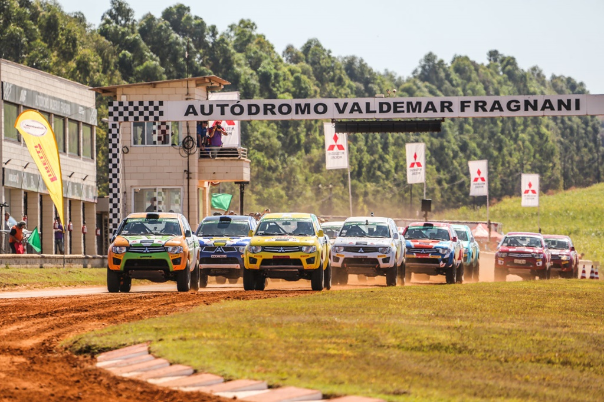
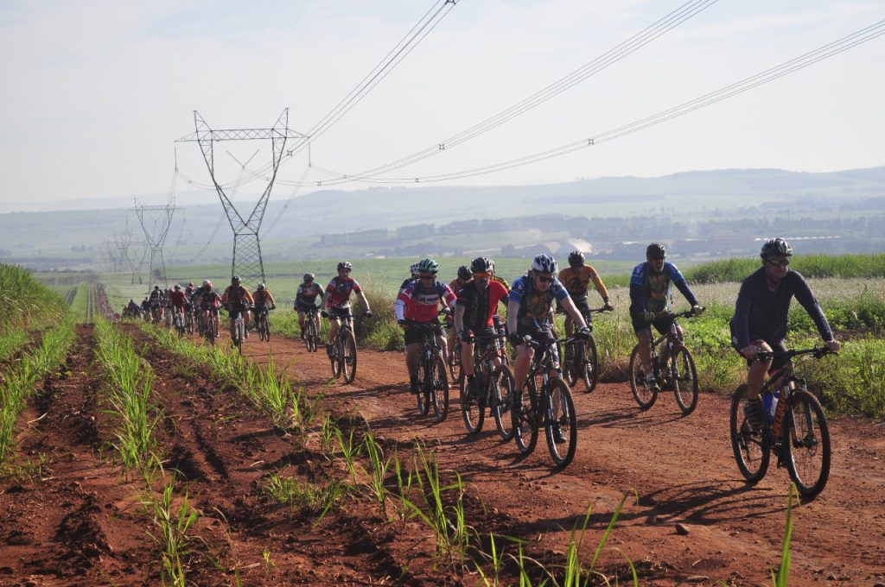
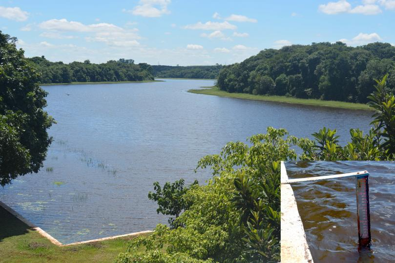
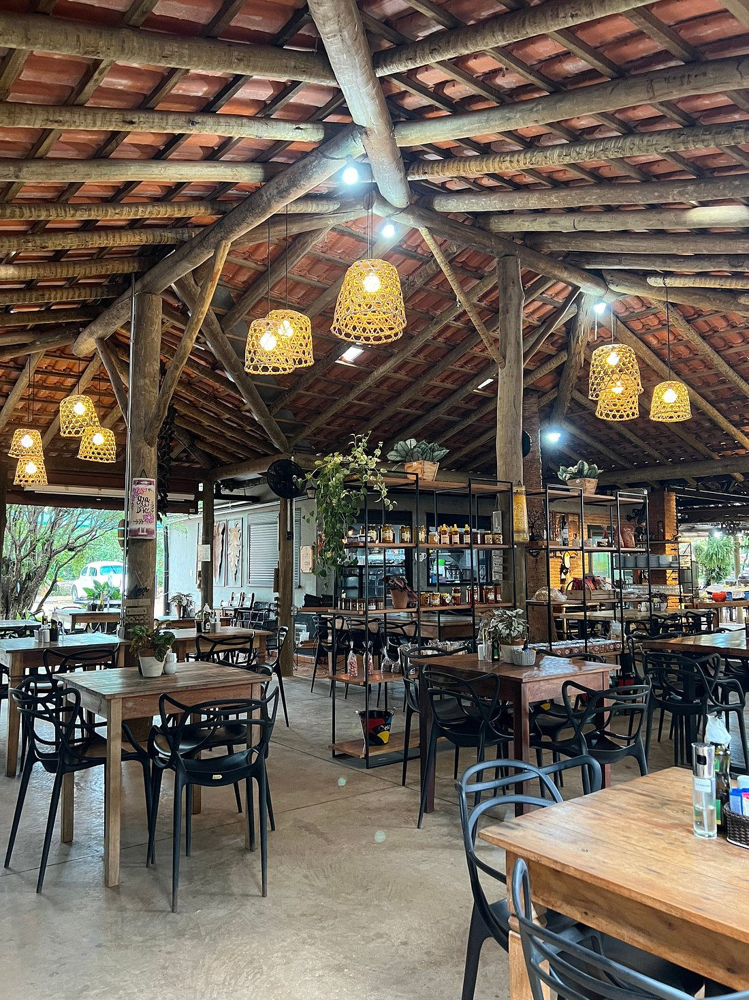
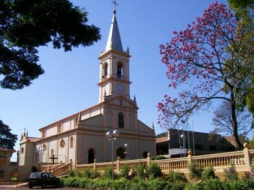
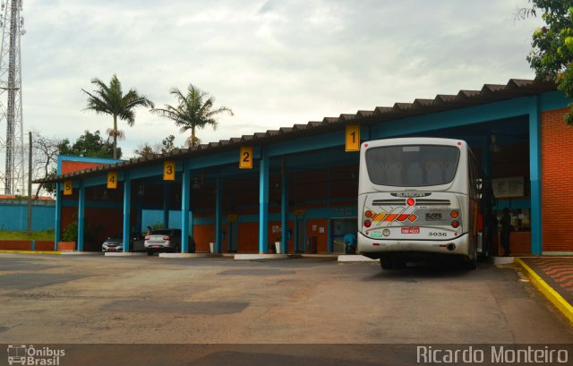

Agora falaremos um pouco dos pontos-turisticos da cidade de Cordeiropolis
Lago União

O principal lago de Cordeiropolis.
Autódromo Valdemar Fragnani
O nosso Autódromo.
Teatro Municipal

O nosso teatro onde acontece as principais apresentações.
Museu cultural
O unico museu de Cordeiropolis.
Rota de ciclistas
Temos um grupo de ciclistas que pedalam por um trajeto tambem.
Mirante da Represa
A nossa represa.
Garden Ateliê
Uma floricultura junto com cafeteria.
Paroquia Nossa Senhora da Assunção
Nossa paroquia do bairro do cascalho.
Terminal Rodoviária
Nosso terminal Rodoviário